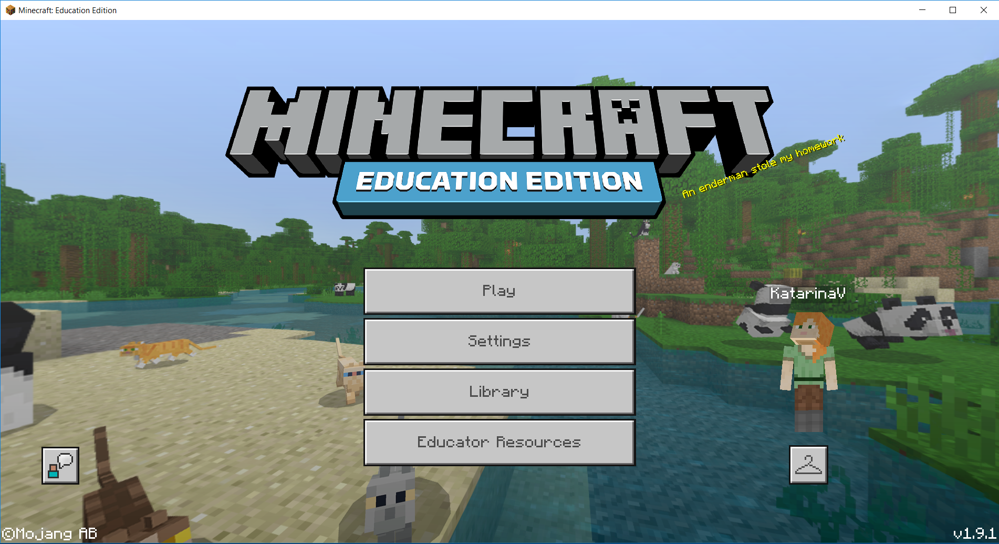
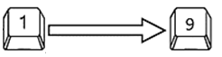
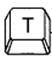

Minecraft-Основни характирестики и компоненти¶
Minecraft е изключително популярна, забавна и креативна 3D игра, където играчите използват наличните средства, за да създават структури или други уреди. Има много начини, по които Minecraft може да се използва за развиване на креативността и умението за решаване на проблеми на играчите.
Всичко, което програмирате с MakeCode ще има моментален ефект върху вашия Minecraft свят, щом задействате програмата. Това е чудесен начин да се научите да програмирате, защото ще можете да видите визуално ефекта от своя код. Тази моментална обратна връзка ще ви помогне да решите проблеми, да видите какво влияние и промени оказвате на игралния свят на Minecraft. Тази обратна информация, получена от играта, може да бъде използвана за повтаряне или изменяне на кода.
В тази част ще разберете как да обедините Minecraft и писането на кодове чрез MakeCode и да разширите и контролирате Minecraft средата.
Инсталиране на Minecraft: Education Edition¶
За да инсталирате пакета, трябва да завършите следните стъпки.
Стъпка 1.
Свалете Minecraft: Education Edition от линка: https://education.minecraft.net/get-started/download. За да свалите на пакета, ще ви трябва достъп чрез акаунта, създаден от училището ви (помолете учител за помощ).
Стъпка 2.
Свалете Minecraft: Education Edition на компютъра си.

Свързване на Minecraft и MakeCode¶
Стъпка 1.
Отворете Minecraft на компютъра си и влезте в своя акаунт

Стъпка 2.
Създайте свят, натискайки бутона Play.
Натиснете бутона Create New в диалоговия прозорец Worlds. тук можете да намерите и някои модели на вече създадени светове. Своя собствен свят ще създадете като натиснете бутона Create New World.

Стъпка 3.
Прозорец ще се отвори, чрез който ще настроите своя свят. Ще оставим всичко, както е, засега, освен частта Cheats, където ще плъзнем бутона Activate Cheats на позицията ON, за да можете да кодирате Minecraft чрез MakeCode.
Стъпка 4.
След като сме готови с настройките за новия ни свят, които можем да променим, когато пожелаем, ще натиснем бутона Create.
Вече създадохме своя собствен свят, където да поставим своите блокове.
Стъпка 5.
Зада можем да програмираме в Minecraft, трябва да впишем буквата “c”. Прозорецът Code Builder ще се появи с листа от приложения, които можете да използвате за кодиране. Изберете Microsoft MakeCode:

Началният екран на MakeCode ще се появи на прозореца Code Builder.

Изберете опцията New Project от листа My Projects, за да създадем нов проект. Ако искате да тествате други програми, можете да изберете една от съществуващите в листа Tutorials.
Щом сте създали нов проект в Code Builder, MakeCode потребителският интерфейс ще се отвори и ще можете да започнете кодирането:

За да напишете код в Minecraft: Education Edition, просто натиснете бутона 
Minecraft потребителски интерфейс¶

Контролирате всичко в Minecraft със своята клавиатура, коята ви позволява да се движите и да изпълнявате различни задачи.
Списък на някои команди в Minecraft:
 - Пауза
- Пауза
 - Toolbar Selection 
Q – Drop item (blocks) - оставяне на предмета (блоковете)
W – Move forward (if you press it twice you can run, or swim if you are in the water) - движение напред (ако го натиснете два пъти, ще тичате или плувате, ако сте във вода)
A – Move left - движение наляво
S – Move backward - движение назад
E – Inventory - инвентар
D – Move right - движение надясно
 - Отваря чата и командния прозорец
 - Героят ще клекне
- Героят ще клекне
 - Героят ще скочи
- Героят ще скочи
Мишката се използва като контролер за камерата, за да видите заобикалящия свят. Натискането на бутона F5 променя ъгъла на камерата.
MakeCode потребителски интерфейс¶
Този онлайн редактор предоставя възможността за кодиране в JavaScript или графично (блоково) програмиране, където командите се наслагват чрез влачене и пускане.
В средата на екрана е блоковата палитра (1), където всички команди (блокове) са разделени в групи. Отдясно има работен плот (2), където можете да завлечете команди и да конструирате програми.

Блоковите палитри се състоят от различни категории, разделени по целесъобразност и употреба. Командните блокове са разделени в категории.

В MakeCode програмите са направени от различни, но свързани, блокове, които са обособени в категории. Името на категорията насочва потребителя към типа на командата (блока), включена в тази група. Всички блокове от една категория са от същия цвят.
Завличаме всеки блок на работния плот, свързваме ги, така че да създадем други блокове според желаната програма. Натисканео на десния бутон на мишката върху блок отваря падащо меню с опцията, която позволява да създадем копие (Duplicate), да добавяме коментари (Add Comment), да трием блокове (Delete Block), както и секция за допълнителна помощ (Help).

Време е да използваме блоковете и да създадем първата си програма в MakeCode.
Проекти¶
В следващите указания ще ви представим някои интересни проекти за програмиране на Minecraft чрез платформата MakeCode. Всички проекти се изпълняват стъпка по стъпка, за да може всеки да ги повтори. Всички процедури за конструиране на проекти са разработени-от създаването на програмата до тестването и.